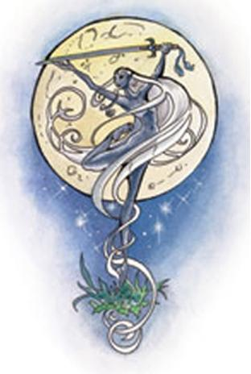

Эилистраи (Темная Дева, Леди Танца, Среброволосая Леди)
Эилистраи (Темная Дева, Леди Танца, Среброволосая Леди)

Младшая сила Исгарда, Хаотик-Добрая.
| ИНТЕРЕСЫ | Песни, красота, танец, владение мечем, охота, лунный свет |
| АЛИАСЫ | Нет |
| НАЗВАНИЕ ВЛАДЕНИЙ | Нидавеллир/Сварталфхейм (Nidavellir/Svartalfheim) |
| ПОКРОВИТЕЛЬ | Нет |
| СОЮЗНИКИ | Callarduaran Smoothhands, Haela Brightaxe, Lurue, Mystra, the Seldarine, Selune |
| ВРАГИ | Deep Duerra, Kiaransalee, Laduguer, Ghaunadaur, Lolth, Malar, Selvetarm, Vhaeraun, Blibdoolpoolp, the Blood Queen, Diinkarazan, Diirinka, Great Mother, Gzemnid, Ilsensine, Ilxendren, Laogzed, Maanzecorian (мертв) |
| СИМВОЛ | Серебряный длинный меч на фоне серебряной луны, с серебряными волосами (волосами Эелистраее) вокруг него и сиянием |
| МИРОВОЗЗРЕНИЕ ПОСЛЕДОВАТЕЛЕЙ | LG,NG,CG |
Эилистраи (EEL-iss-TRAY-yee) - богиня добрых дроу, тех темных эльфов, что решили вернуться к жизни на поверхности Королевств, наслаждаться ею как эльфы лесов, покинутые дроу многие годы назад. Она богиня песен и красоты, добра и света, служение ей происходит с помощью песен и танца, предпочтительно на поверхности под звездами лунной ночи. Эелистраее помогает своим подопечным в охоте и воинском искусстве, поклонение ей обычно сопровождается пирами. Эилистраи так же имеет последователей среди людей, эльфов и особенно полуэльфов (особенно в Силверимуне (Sylverymoon)), так же она хорошо относится к Арфистам (Harpers). Она обычно видна только издалека, но ее песня (невероятно красивая, вызывающая у многих слезы) слышна везде, где она появляется.
Темная Дева сестра Ваэруна и дочь Араушни, которая была изгнана и стала известна как Лолс, и Кореллона Ларефиана. После того как Эилистраи чуть не убила своего отца стрелой во время великой битвы между Селдарин и войском злых божеств, хотевших покорить Арвандор, Темная Дева отреклась от использования стрелкового оружия (правда она позволяет им пользоваться своим последователям). Хотя ее стрела вылетела из-за предательства Араушни, Эилистраи выбрала изгнание из Арвандора (и Селдарин) вместе со своей матерью и братом, предвидя время, когда она будет нужна для сдерживания их зла. На Абейр-Ториле Темная Дева веками боролась против ненависти Ваэруна и его извращающего влияния на Илитиири (южных, темнокожих эльфов). Сила Эилистраи убыла со смертью многих ей верных во время Темного Бедствия (Dark Disaster), а возросшая сила Лолс и Гаунадоора среди темных эльфов ограничили влияние Леди Танца на тысячелетия. Лишь в последние века вера в Эилистраи вернула ее видное место в Фаеруне, как Темной Девы, ищущей пути возвращения падших дроу к давно покинутому свету.
Эилистраи - меланхоличная, эмоциональная женщина дроу, любящая красоту и мир. Зло большинства дроу дает разгореться гневу внутри нее, а когда ее сторонники получают ранения - этот гнев способен вылиться в дикие действия. Не в ее стиле действовать открыто, но она часто помогает существам (поклоняются они ей или нет, неважно) в небольших, но актуальных и полезных вещах. Эилистраи более всего счастлива, когда видит поющих или играющих бардов, искуссных умельцев за работой, любящие пары или просто добрые поступки.
Пока Темная Дева и Селдарин остаются союзниками, это натянутые отношения, что отражает разделение, что существует между эльфами. Среди эльфийских сил Эилистраи единственная близка с Эреван Илесир (Erevan Ilesere) и она только недавно стала работать с нелегким в сотрудничестве Шеварашем (Shevarash). Эелистраее необычно близка с человеческой богиней магии, Мистрой (Mystra). Квилю Веладорн (Qilue Veladorn), седьмая из Семи Сестер, служит обеим богиням как Избранная Мистрой и как Избранная Эилистраи. Темная Дева ненавидит искажения и неискупное зло, что вдвоем творят Лолс и Гаунадоор, так же она скорбит о жестокости и эгоизме своего брата.
Аватар Эилистраи (Бард 29, Клерик 24, Рейнджер 21, Воин 21)
Эилистраи появляется как обнаженная, с лоснящейся кожей женщиной дроу. Она девяти футов ростом (около трех метров), мерцающие серебром волосы тянутся до самых лодыжек. Ее волосы и серебряное излучение прикрывают тело в смутном, непрерывно движущемся одеянии красоты. Эилистраи может воззвать ко всем сферам и школам магии, но ее любимые заклинания принадлежат сферам животных, созидания, лечения и растительности, а так же школе зачарования/очарования.
AC (Класс Защиты) -2;
MV (Передвижение) 15, в полете 18;
HP (Количество жизни) 165;
THAC0 0;
#Атак 7/2, урон ld8+12/ld8+12 (поющий меч танца +3 x2, +7 STR, +2 особый бонус во всех мечах);
Сопротивляемость магии 50%;
Размер: L (9 футов высотой)
СИЛА 19,
ЛОВКОСТЬ 20,
ТЕЛОСЛОЖЕНИЯЕ 16,
ИНТЕЛЛЕКТ 21,
МУДРОСТЬ 22,
ХАРИЗМА 23
Заклинания жреческие: 12/12/12/12/11/8/3, маговские: 6/6/5/5/5/5/1
Спасброски: PPDM 2, RSW 4, PP 4, BW 4, Sp 5
Особые Атаки/Защиты: Эилистраи носит два близнеца - поющие мечи танца +3, каждый со всеми качествами полуторника танца (но с точным числом атак и бонусами повреждений) и поющего меча (смотри ниже). Когда она желает появиться одетой, Темная Дева обувается в темно-коричневую пару ботинок, содержащих в себе все силы ботинок эльфов, ботинок различных следов и ботинок севера, что позволяет ей при желании идти не оставляя следов и двигаться в полной тишине. Она так же носит зеленый, с темно-зелеными пятнами, плащ, который меняет цвет для сливания с окружающей листвой, что дает укрытие как если бы были надеты плащ эльфов и кольцо силы хамелеона, но всегда дающее 100% невидимость на природе. Эилистраи имеет истинное зрение (непрерывно, но функционирующее как жреческое заклинание) и может выпускать девять серебряных магических стрел в раунд в дополнение к ее аватары атакам в ближнем бою или магией в раунд. Эти стрелы безошибочно наносят 2d4 очка повреждений каждая всем существам, кроме злых существ и нежити, которые получают 4d4 повреждения от каждой стрелы.
Раз в турн аватар Эилистраи может использовать отвод заклинания как кольцом, но эффект есть против всей магии, направленной на нее в этот раунд. Раз в турн аватар так же может регенерировать нанесенные повреждения, восстанавливая даже потерянные конечности без броска на шок и залечивая 1d4+1 очка повреждения в раунд (этот процесс продолжается 4 последовательных раунда и исключает произнесение заклинаний, но не других действий или атак).
По желанию аватар Темной Девы может создать лунный огонь (смотри заклинание лунного огня Эилистраи ниже), серебряный свет или танцующий свет; исполнять звуки музыки арфы, рога или флейты и петь; По желанию ее песня может воздействовать на нежить или злых существ 3 и ниже уровней как заклинанием отталкивания (repulsion); может оглушить любое одно существо (спасбросок против заклинания с пенальти -2 для избежания) на 1 раунд; или может действовать как заклинание стука (knock) (как если бы его произнес маг 11 уровня). Она может так же левитировать по желанию (только она, горизонтальное движение до 160 футов в раунд). Она может быть ударена лишь +1 или выше магическим оружием.
Другие появления.
Темная Дева редко вмешивается напрямую в дела смертных, но она бывает появляется в середине танца в ее честь, прыгает среди пламени пира без вреда для себя. Она так же появляется, излучая тусклый свет и одетая в гладкий, с капюшоном плащ на привалах путников в ночном лесу для проверки их доброты.
Большинство почитателей видели Эилистраи только издалека, на холмах или зубцах городской стены, серебряные волосы развивались позади нее. Она появляется чтобы показать свое благоволение или благословение и часто объединяет существ исполнением высокого звука зова охотничьего рога (в некоторых случаях это отпугивает разбойников или орочих налетчиков, которые думают что это подходит помощь к их добыче). Когда охотничий рог Эилистраи слышен, но врагов нет, ее последователи расценивают это как сигнал того, что кто-то недалеко нуждается в их помощи.
Наиболее частое появление Эилистраи - в серебряном сиянии, иногда в аккомпонименте с бессловным отрывком песни или эхом нескольких нот арфы. Если сияние вокруг предмета (почти всегда меча или другого клинкового оружия), этот предмет обычно получает следующие две силы на 6 раундов: весь возможный урон (максимальный бросок кости плюс все остальные бонусы) и иммунитет к ломаемости или другому повреждению (автоматический успешный спасбросок). Если сияние окутывает существо, благоволение Эелистраее дает ему следующие три силы на 4 раунда: способность бить первым в любой раунд, улучшение Класса Защиты (AC) на 2 пункта и +4 бонус ко всем броскам атаки, включая способность бить созданий, которые обычно бьются только магическим оружием +2 и выше.
Эилистраи иногда появляется почитателям или не почитающим ее, кто заслужил это сольным танцем, в виде серебряного сияния, что трансформирует волосы счастливчика в гриву серебряного огня на месяц и может даже перманентно. Эилистраи так же известна помощью своим почитателям тем, что создает серебряный свет в темноте, если нужно что-то найти или быть проводником на незнакомом пути в темном ночном лесу. Или когда рождение ребенка происходит в темноте. Она иногда посылает порхающих серебряных мотыльков с раздвоенными хвостами, чтобы показать свое благоволение, присоединение к танцу или ведение верующих в нее сбившихся в дороге или заблудившихся.
В редких случаях мужчины, поклоняющиеся Эилистраи, или существа без жреческих сил, работающие в помощь Эилистраи и нуждающиеся в ее видимом благословении и поддержке (или просто свете) - временно наблюдают лунный огонь. Такие появления по желаюнию богини; удачливые получатели даже не управляют длительностью, интенсивностью и местонахождением свечения.